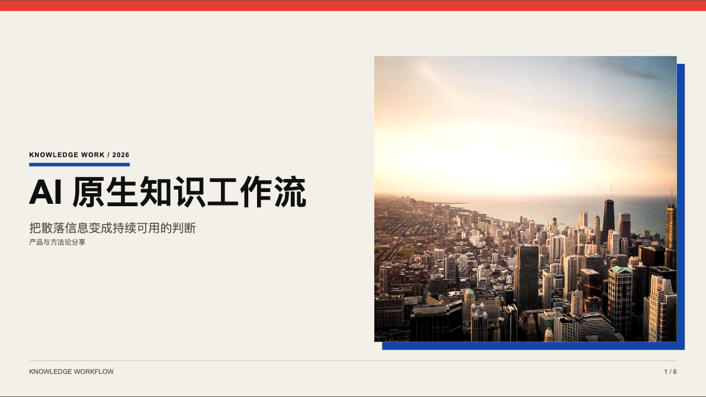
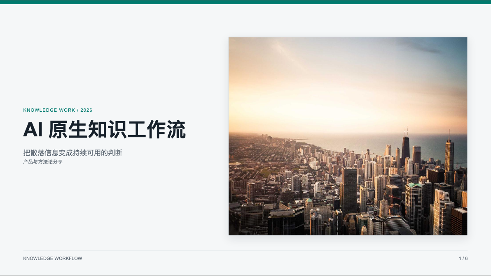
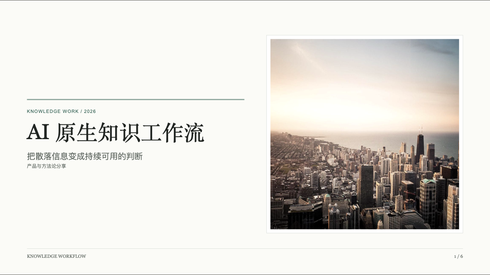

同一套 6 页内容、同一组图片、八种视觉 recipe。点击任意封面进入可编辑的完整演示。
管理汇报 / 方案沟通
克制留白、左侧结论线和稳健图片框。
行业观点 / 品牌故事
纸刊质感、衬线标题和非对称图文关系。

设计发布 / 鲜明主张
严格网格、信号色与高对比几何边界。
产品发布 / 技术演讲
深色舞台、青色工程线和低饱和影像。

战略分析 / 经营汇报
结论优先、紧凑层级与清晰对比结构。

答辩 / 白皮书 / 研究
证据感、克制图像和出版式层级。
创意提案 / 增长 / 品牌
高反差色块、粗标题与海报式构图。
Keynote / 高端发布
深黑舞台、金色细节与沉浸式影像。